Flockade
Flockade
This game is a woolhaven exclusive game. Flockade is a game that is similar to Rock-Paper-Scissors with strategic twists of having Shield-Scribe-Sword-Shepherd. This game can be unlocked fixing Aniel's home.
Gameplay
- The game is played by placing your pieces in 2x2 boards, 4 for each player, 8 in total.
- Players take turn placing their pieces, often with the opponents going first.
- Each player gets 3 pieces to choose from that changes each turn.
- The pieces consist of Shield, Scribe, Sword and Shepherd. Shield defeats Sword, Scribe defeats Shield, Sword defeats Scribe.
- All Shepherd pieces can be defeated by any other piece.
- Some Pieces are "blessed". These pieces can alter the route of the game by changing positions, earning extra points or sabotaging the opponent.
- The effects of the pieces happen depending on their sequence number. In player perspective the sequence goes; 1 right top, 2 right bottom, 3 left top, 4 left bottom.
Pieces
There are 36 pieces and 4 categories of pieces; Sword, Shield, Scribe and Shepherd. Shepherd pieces can only be obtained by completing Aniel's quests against the 6 Flockade players. Swords, Shields and Scribes each have 10 pieces, 30 in total being:
- Default, Cursed, Fallen, Just (Justice), Risen, Marked, Prize, Mercenary, Scout and Trickster.
The pieces themselves represent the lambs that used to exist and other followers of Yngya.
Piece Reference
Flockade piece list and unlocks (click to expand)
| Piece | Description | Wins Against | Defeated By | Lore Text | Unlock |
|---|---|---|---|---|---|
| Sword | Mutton Sword | Scribes Shepherds Trickster pieces |
Shield | — | Unlocked by default |
| Just Sword | Just Sword | Trickster pieces | — | Bravest of lamb warriors. | Unlocked by default |
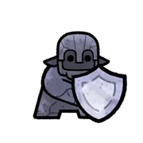 Shield |
Mutton Shield | Swords Shepherds Trickster pieces |
Scribes | — | Unlocked by default |
| Just Shield | Just Shield | Trickster pieces | — | A defender of lambkind. | Unlocked by default |
| Scribe | Mutton Scribe | Shields Shepherds Trickster pieces |
Swords | — | Unlocked by default |
| Just Scribe | Just Scribe | Trickster pieces | — | Cleric of the order of lamb. | Unlocked by default |
| Sword Justice | Usiu, Just Sword | If duelling against another sword, ties are won. Scribes Shepherds Trickster pieces |
Swords Shields Trickster pieces |
Victor of the Ewefall skirmish. | Unlocked by defeating Aniel in a game of Flockade |
| Shield Justice | Mihr, Just Shield | If duelling against another shield, ties are won. Swords Shepherds Trickster pieces |
Shields Scribes Trickster pieces |
Defender of justice. | Unlocked by defeating Aniel in a game of Flockade |
| Scribe Justice | Tartys, Just Scribe | If duelling against another scribe, ties are won. Shields Shepherds Trickster pieces |
Scribes Swords Trickster pieces |
Knowledge keeper of culture, custom, and law. | Unlocked by defeating Aniel in a game of Flockade |
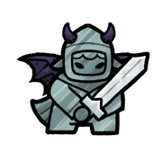 Sword Fallen |
Jorpiel, Fallen Sword | When a duel phase begins, all pieces in the same column move down one square. Scribes Shepherds Trickster pieces |
Shields Just Swords Trickster pieces |
Upon their sword they fell, rather than surrender. | Unlocked by default |
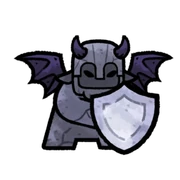 Shield Fallen |
Kelsen, Fallen Shield | When a duel phase begins, all pieces in the same column move down one square. Swords Shepherds Trickster pieces |
Scribes Just Shield Trickster pieces |
The last defender, the lost victor. | Unlocked by default |
| Scribe Fallen | Aniel, Fallen Scribe | When a duel phase begins, all pieces in the same column move down one square. Shields Shepherds Trickster pieces |
Swords Just Scribe Trickster pieces |
Recorder of history and all its repetitions. | Unlocked by default |
| Sword Risen | Douma, Risen Sword | When a duel phase begins, all pieces in the same column move up one square. Scribes Shepherds Trickster pieces |
Shields Just Swords Trickster pieces |
Her bleats signalled the charge at Last Hoof. | Unlocked by default |
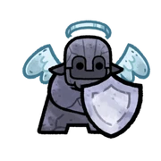 Shield Risen |
Aidonius, Risen Shield | When a duel phase begins, all pieces in the same column move up one square. Swords Shepherds Trickster pieces |
Scribes Just Shield Trickster pieces |
The first to press forward against Tooth and Claw. | Unlocked by default |
| Scribe Risen | Narayus, Risen Scribe | When a duel phase begins, all pieces in the same column move up one square. Shields Shepherds Trickster pieces |
Swords Just Scribe Trickster pieces |
Writer of the great Comlambments. | Unlocked by default |
| Sword Prize | Madan, Prize Sword | If this piece wins a duel, 2 points are awarded instead of 1. Scribes Shepherds Trickster pieces |
Shields Just Swords Trickster pieces |
One of lambkind's greatest champions. | Unlocked by defeating Aniel in a game of Flockade |
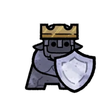 Shield Prize |
Domiel, Prize Shield | If this piece wins a duel, 2 points are awarded instead of 1. Swords Shepherds Trickster pieces |
Scribes Just Shield Trickster pieces |
Protector of grand riches. | Unlocked by defeating Aniel in a game of Flockade |
| Scribe Prize | Valiuk, Prize Scribe | If this piece wins a duel, 2 points are awarded instead of 1. Shields Shepherds Trickster pieces |
Swords Just Scribe Trickster pieces |
Tallier of the spoils of war. | Unlocked by defeating Aniel in a game of Flockade |
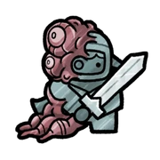 Sword Cursed |
Lornileth, Rotten Sword | When played, blessings on the opposite row are nullified. Scribes Shepherds Trickster pieces |
Just Swords Shields Trickster pieces |
Dealt the killing blow against Tooth and Claw. | Unlocked by defeating Rami in a game of Flockade |
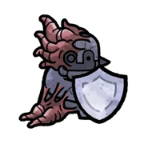 Shield Cursed |
Elyon, Rotten Shield | When played, blessings on the opposite row are nullified. Swords Shepherds Trickster pieces |
Just Shields Scribes |
Hero of the Grasslands. | Unlocked by defeating Baraq in a game of Flockade |
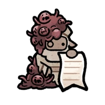 Scribe Cursed |
Antons, Rotten Scribe | When played, blessings on the opposite row are nullified. Shields Shepherds Trickster pieces |
Just Scribes Swords |
Decipherer of ancient scrolls and tombs. | Unlocked by defeating Chazaq in a game of Flockade |
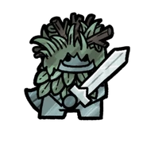 Sword Scout |
Phine, Scout Sword | This piece must replace an opponents piece if one is available, otherwise there is no effect. Scribes Shepherds Trickster pieces |
Shield Just Sword Trickster pieces |
Quickest, quietest of solider. | Unlocked by defeating Sariel in a game of Flockade |
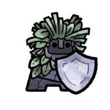 Shield Scout |
Icirath, Scout Shield | This piece must replace an opponents piece if one is available, otherwise there is no effect. Swords Shepherds Trickster pieces |
Scribes Just Shield Trickster pieces |
Returned the Shepherd's Crook home. | Unlocked by defeating Koka in a game of Flockade |
| Scribe Scout | Poochan, Scout Scribe | This piece must replace an opponents piece if one is available, otherwise there is no effect. Shields Shepherds Trickster pieces |
Swords Just Scribe Trickster pieces |
Herald of victories, of surrender, and of loss. | Unlocked by defeating Baraq in a game of Flockade |
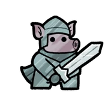 Sword Mercenary |
Carlen, Mercenary Sword | When a duel phase begins, this piece swaps places with the piece in the sam row. Scribes Shepherds Trickster pieces |
Shields Just Swords Trickster pieces |
Renowned for sharp blade and wit. | Unlocked by defeating Aniel in a game of Flockade |
| Shield Mercenary | Adriel, Mercenary Shield | When a duel phase begins, this piece swaps places with the piece in the sam row. Swords Shepherds Trickster pieces |
Scribes Just Shield Trickster pieces |
Fleet of hoof, the wind brought her home. | Unlocked by defeating Aniel in a game of Flockade |
| Scribe Mercenary | Jomazel, Mercenary Scribe | When a duel phase begins, this piece swaps places with the piece in the sam row. Shields Shepherds Trickster pieces |
Swords Just Scribe Trickster pieces |
Fell at the battle of Lost Hoof. | Unlocked by defeating Aniel in a game of Flockade |
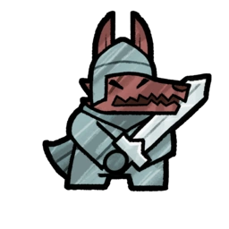 Sword Marked |
Harriath, Marked Sword | Marked by the wolf. If this piece wins a duel, the opponent losses 1 point. Scribes Shepherds Trickster pieces |
Shields Just Swords Trickster pieces |
Marred by Claw, wounded by Tooth, they vanished. | Unlocked by defeating Rami in a game of Flockade |
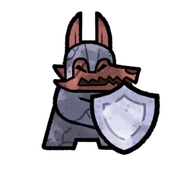 Shield Marked |
Januros, Marked Shield | Marked by the wolf. If this piece wins a duel, the opponent losses 1 point. Swords Shepherds Trickster pieces |
Scribes Just Shield Trickster pieces |
Stood stalwart against predators. | Unlocked by defeating Koka in a game of Flockade |
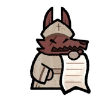 Scribe Marked |
Angoel, Marked Scribe | Marked by the wolf. If this piece wins a duel, the opponent losses 1 point. Shields Shepherds Trickster pieces |
Swords Just Scribe Trickster pieces |
Into the belly of Tooth and Claw he went. | Unlocked by defeating Chazaq in a game of Flockade |
| Sword Trickster | Ewe, Trickster Sword | When a duel phase begins, this piece will turn into any other piece. Scribes Shepherds Trickster pieces Shields Just Swords Trickster Pieces |
Rotten Shields Scribes Shepherds |
Ewe of the trickster flock. | Unlocked by defeating Aniel in a game of Flockade |
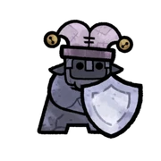 Shield Trickster |
Ram, Trickster Shield | When a duel phase begins, this piece will turn into any other piece. Swords Shepherds Trickster pieces Scribes Just Shield Scribes Just Shields Trickster Pieces |
Rotten Scribes Swords Shepherds |
Ram of the trickster flock. | Unlocked by defeating Aniel in a game of Flockade |
| Scribe Trickster | Lamb, Trickster Scribe | When a duel phase begins, this piece will turn into any other piece. Shields Shepherds Trickster pieces Swords Just Shields Swords Just Shields Trickster Pieces |
Rotten Swords Shields Shepherds |
Lamb of the trickster flock. | Unlocked by defeating Aniel in a game of Flockade |
| The Shepherd | The Shepherd | No effect | Draw with other Shepherds Swords Shields Scribes |
N/A | When a Rotten piece takes away a Shepherd's blessing. |
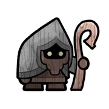 Shepherd Lone |
The Lone Shepherd | At the start of their turn, the opponent draws 1 piece instead of 3. | Draw with other Shepherds Swords Shields Scribes |
Shepherd, what of your flock? | Unlocked by defeating Aniel in a game of Flockade with a bet of 1 wool |
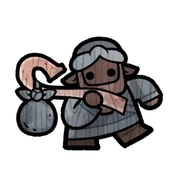 Shepherd Wandering |
The Wandering Shepherd | Each time this piece moves, gain 2 points. | Draw with other Shepherds Swords Shields Scribes |
Shepherd of the Wordly Flock; we are all your Herd. | Unlocked by defeating Baraq in a game of Flockade with a bet of 2 wool |
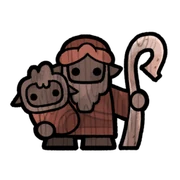 Shepherd Guardian |
The Guardian Shepherd | If duelling against a piece marked by the wolf, the whole round is won. Marked Swords Marked Shields Marked Scribes |
Swords Shields Scribes |
By your Crook we do march. | Unlocked by defeating Koka in a game of Flockade with a bet of 3 wool |
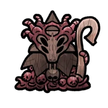 Shepherd Cursed |
The Rotten Shepherd | When played, all pieces on the opponents side have blessings nullified. | Draw with other Shepherds Swords Shields Scribes |
Purity now stained. | Unlocked by defeating Rami in a game of Flockade with a bet of 5 wool |
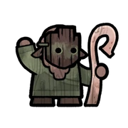 Shepherd False |
The False Shepherd | If this piece loses a duel, 2 points are awarded. | Draw with other Shepherds Swords Shields Scribes |
May we know the False Shepherd when they come. | Unlocked by defeating Chazaq in a game of Flockade with a bet of 8 wool |
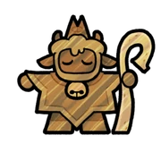 Shepherd Golden |
The Golden Shepherd | All points won in duels are doubled. Marked Swords Marked Shields Marked Scribes |
Swords Shields Scribes |
Guide us to Riches, of land, of lore, of herd. | Unlocked by defeating Sariel in a game of Flockade with a bet of 10 wool |